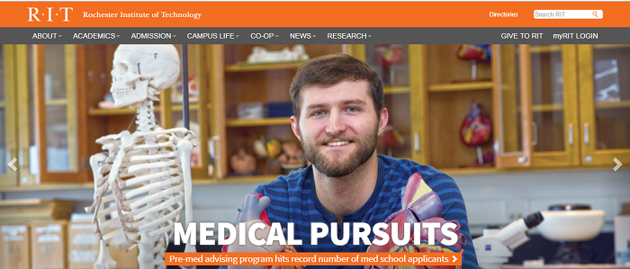
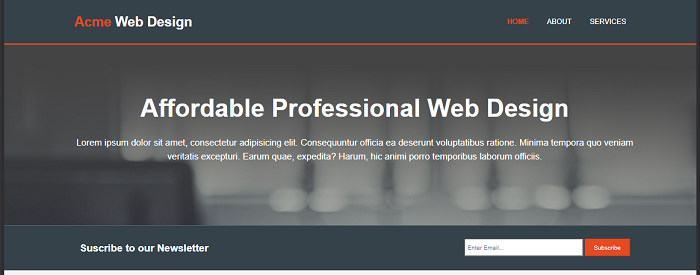

In this page, I will illustrate two websites which were of inspiration to my web design, while also giving an explanation of how my colleagues and I decided on a good design.
Rochester Institute of Technology: https://www.rit.edu/
Rochester Institute of Technology's website is a page which gave me some inspiration due to certain features such as the navigation layout and the font style used. In addition, I also liked how is placed closely above the navigation bar, which is a style I incoparated in my web design.
Acme Web Design (Brad Traversy): https://www.youtube.com/watch?v=Wm6CUkswsNw
While searching for web design ideas, I came across a developer named Brad Traversy who developed a website by the name of Acme Web Design. The layout and also colour scheme gave me the idea of how to structure my own web design. Furthermore, the font colour and style were also influential in my decisions.
My team and researched various designs to enable us complete our assingnments as illustrated in the images above. It took about a week or so to find suitable designs that would fit with the requirements, which was relatively fast. My teammates looked at news companies such as 'The Guardian' and 'The Mirror' for navigations methods. Additionally, a major tool in looking at design schemes was by researching videos on youtube and other forms of social media.I personally was going for a simple, yet effective layout. I believe I was able to do this by creating webpages with a consistent theme which is important when developing a website. Furthermore, I was also trying to implement a website that is responsive as the majority of internet users in this mordern day access the web, via mobile technology. In effort to make my website responsive, I researched multiple videos to give me the idea of how to incorporate this on my web design, which successfully worked for me. In order to improve my design, I thought the idea of certain CSS features e.g. borderlines to seperate the sections would be essential, while also using a different font-color for particular words, in order for them to stand out.